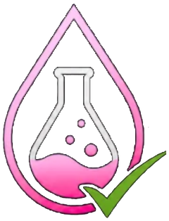
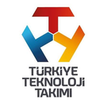
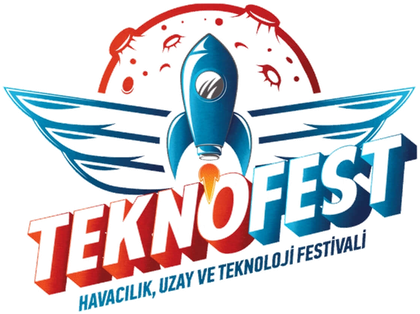
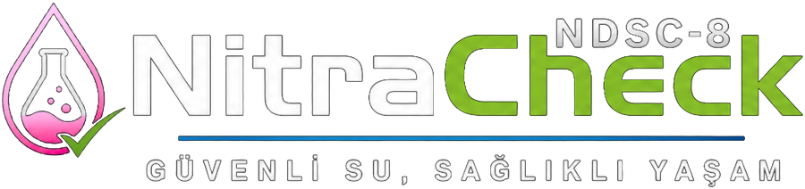
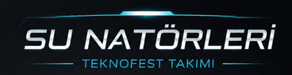
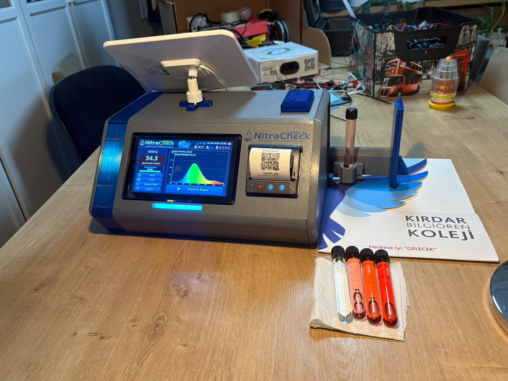

01
NDSC-8 Optik Analiz Katmanı
AS7341'den gelen yüksek çözünürlüklü veriler ezbere bir değere değil; dark referans, blank referans ve absorbans dönüşümünden geçen özgün NDSC-8 nitrat skoruna dönüştürülür.

NITRACHECK SU SENATÖRLERİ · TEKNOFEST



NDSC-8 ÖZGÜN NİTRAT ANALİZ ALGORİTMASICANLI ÇEVRESEL İZLEME
Doğayı dinleyen, geleceği koruyan yerli spektral teknoloji: NitraCheck cihazlarından gelen ölçümler GPS konumlarıyla saha şartlarında, laboratuvar hassasiyetinde haritaya işlenir. Bir noktaya dokunarak ölçüm ayrıntılarını inceleyin.
NITRACHECK TÜRKİYE
ÖZGÜNLÜK VE İNOVASYON
NitraCheck'i prototipten ayıran şey donanımı kadar, üstüne kurduğumuz özgün karar katmanları. Her ölçüm; optik doğrulama, konum mühürleme ve güç kararlılığından geçtikten sonra haritaya düşer.
AS7341'den gelen yüksek çözünürlüklü veriler ezbere bir değere değil; dark referans, blank referans ve absorbans dönüşümünden geçen özgün NDSC-8 nitrat skoruna dönüştürülür.
Tek bir ışık kaynağına bağımlı kalmadan, 525 nm ve 630 nm ardışık uyarımla numunenin farklı dalga boylarındaki spektral yanıtı karşılaştırmalı olarak analiz edilir.
Güvenilir bulunan her ölçüm cihaz hafızasına kaydedilir, GPS ile mühürlenir ve Firebase üzerinden Türkiye'nin su kalitesi risk haritasına yapılandırılmış veri olarak işlenir.
SHT40 sadece ekrana sıcaklık/nem yazdırmaz; ortam koşullarının ölçüm kalitesi üzerindeki etkisini izleyen bir kalite değerlendirme katmanı olarak çalışır.
Optik doygunluk, sinyal yeterliliği ve kalibrasyon sınırları değerlendirilir. Riskli durumlarda sahte bir "0" değeri yerine ölçüm "Geçersiz" sayılarak güvenlik sağlanır.
Katmanlı güç izolasyonu, karmaşık algoritmik süreçlerin ve termal yazıcı gibi mekanik yüklerin sahada cihazı kilitlemeden çalışmasını garanti eder.
ÖLÇÜM ZİNCİRİ
NitraCheck tek bir sensör değerini doğrudan ppm'e çevirmiyor. Ölçüm; kontrollü aydınlatma, AS7341'in sekiz görünür kanalı, dark/blank düzeltmesi, absorbans ve NDSC-8 skoru üzerinden kalibrasyon modeline taşınıyor.
525 nm yeşil analitik ışık ve 630 nm kırmızı referans ışığı.
F1–F8: 415, 445, 480, 515, 555, 590, 630 ve 680 nm.
Elektronik/ortam tabanı çıkarılır ve referans numuneyle karşılaştırılır.
Beer–Lambert mantığıyla A = ln(I₀/I) hesaplanır.
Sekiz kanalın spektral alanı, spektral şekil ve kırmızı referans birlikte değerlendirilir.
Bilinen standartlarla skor, mg/L nitrat tahminine dönüştürülür.
ENDÜSTRİYEL DONANIM GÜCÜ
Projeyi prototip aşamasından çıkarıp sahaya inmeye hazır bir ürün formuna sokan, özenle seçilmiş donanım altyapısı. Beyni de gözü de kendi seçimimiz.
800×480 IPS ekran güneş altında dahi harita risk renklerini net gösterir; GT911 kapasitif dokunmatik eldivenle bile çalışır; çift çekirdekli ESP32-S3, UI, GPS ayrıştırma ve Firebase bağlantısını takılmadan paralel yürütür.

GERÇEK PROTOTİP · NDSC-8Klasik RGB sensörlerin aksine, 8 görünür ve NIR dahil 11 bağımsız kanalda 16-bit çözünürlükle absorbans okur; suyun içindeki nitratın optik parmak izini çıkarır.
Her ölçümü hassas enlem/boylam ile mühürler; NitraCheck'i basit bir ölçüm aletinden Türkiye'nin su haritasına veri sağlayan bir coğrafi istasyona dönüştürür.
Ultra düşük güç tüketimiyle sistemin enerji bütçesini korurken, çevresel koşullara göre ana ölçüm sonuçlarını anlık kalibre eder.
Sensörler, HMI ekran ve diğer donanımlar arasındaki veri trafiğini yöneten iletişim omurgası; sinyal bütünlüğünü koruyup veri çakışmalarını sıfıra indirir.
Ölçüm sonucunu, konum bilgisini ve zaman damgasını akıllı telefona gerek duymadan sahada anında fiş olarak basar.
ÇOK KATMANLI İZOLE GÜÇ MİMARİSİ
Güneş paneli ile kendi enerjisini üreten NitraCheck; MPPT şarj kontrolü, 4S BMS ve yüklere özel izole regülatör katmanlarıyla sahada aylarca bakım gerektirmeden çalışacak şekilde tasarlandı.
CİHAZ AĞI
Cihaz ölçümünü GPS koordinatıyla Firebase Realtime Database'e gönderdiğinde, web platformu veriyi gerçek zamanlı dinler ve haritadaki noktaları günceller.
TÜRK ÖĞRENCİLERİ TARAFINDAN GELİŞTİRİLDİ
Tamamen yerli yazılım, yerli donanım, milli teknoloji.
NitraCheck, Su Senatörleri takımı tarafından TEKNOFEST kapsamında yerli ve milli imkanlarla geliştirilmektedir.